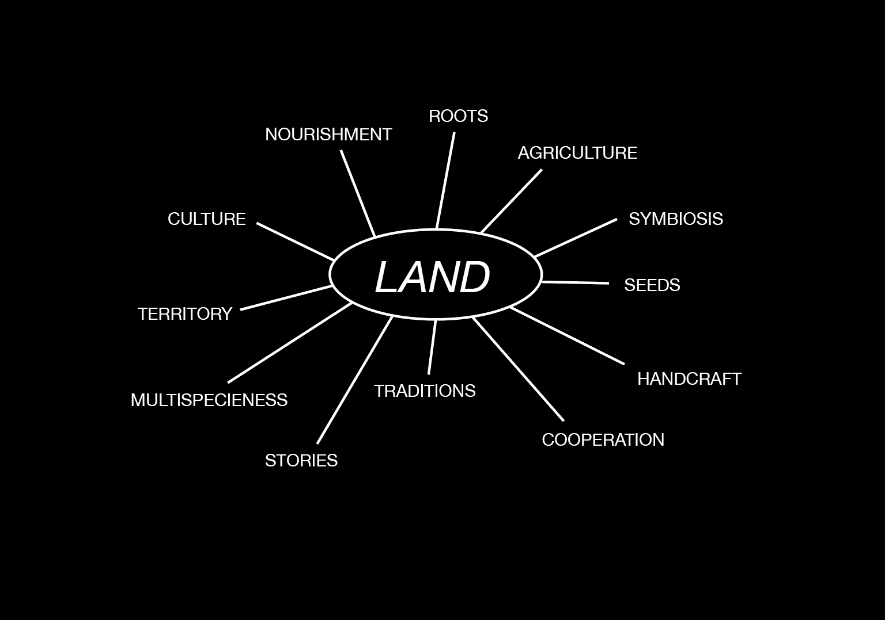

Over the past thirty years, urbanization advancement has been a serious threat to peripheral territories even though some of them has managed to pursue an anachronistic way of living well distanced from the needs and modern conjectures that the capitalistic system has imposed on the world. The attraction to the urban world, however, has led large masses of people to abandon their places in search of a new life, far from the land. In the North-East of Italy, located in the Oriental Alps, there exist a territory that hardly still resists the looming threats of abandonment: its name is Carnia. Its forests and headlands have always characterized it as a severe and hostile territory, where life flows intensively entangled in nature's mutations. A rural territory, rich in traditions that have been settled into the soil, secular symbol of nourishment and, a hard community who have learned to live with their environment in a symbiotic and unique relationship. In thirty years the population number has suffered a decline of 12,500 inhabitants, which inevitably led to the ageing of the total population. Depopulation means abandonment of houses, villages, lands, infrastructures, traditions, stories, practices, seeds, gestures, and way of living that has characterized the past and the present of the territory. One possible solution to revive these territories is to remain, deciding to do not leave or to arrive believing in the potentials that the territory offers. To remain, also means, to bet on those territories that have been part of the soul’s past peoples, to pursue a lifestyle that is in concordant with the territory and, to fight for and with the territory against the homologate capitalistic world that makes of humans and other-thanhuman an insignificant part of the whole system led by the few. Staying, then, should not be considered a shortcut, an act of laziness, a choice of comfort; staying is an adventure, an act of unconsciousness and, perhaps, of bravery, a toil and a pain. Do not give in to rhetoric or emphasis, but staying is the extreme form of traveling. Staying is an art, an invention; an exercise that challenges the rhetoric of local identities. Staying is a different practice of places and a different experience of time, a reconsideration of the rhythms and seasons of life (Teti, 2011). Re-inhabiting these lands would mean believing in a community capable of uniting for the good of the entire territory. But how to encourage the act of remaining?
PROJECT PURPOSE
The research project conducted during the previous semester led me to consider the land as the core of my thesis topic, considering the term in its wider meaning of the Italian terra that means contemporary land, soil, and earth. But why land? Land is what stands below us, it is at the base of our entire life, where humans are one part of entangled web of relations. It gives nourishment and it characterize a territory, a community, and their stories. Returning to the land would mean giving it back importance, reconsidering the role of being/working/living with and in the land. Enhancing the different modes of relation that living beings have with the land/soil through their potential to transform human-soil relation, becoming active members of “soil communities” beyond the mere consumerism of land’s resources (Puig de la Bellacasa, 2015). Carnia’s territory is rich in lands, its inhabitants established their lives on those lands, building houses, bridges and roads and feeding on woods and fields. Here, every tradition, proverb, story or practice is embedded in the past agricultural world, when the land was all their richness, the same land that represents what still remain in a depopulated territory. In land, I see the power to encourage the act of staying, questioning our current way of living and restoring something that draws in the past but that has a vision on the future of our territory. Returning to the land would mean increase the respect toward nature and the other-than-human beings, but also would lead to cooperation among humans in order to reach together the same purpose, the salvation of our land and culture. My intention, therefore, is to praise the Carnia's land through the collection of witnesses, experiences, and visions of the past, present and future of our land, placing them in an experiential living archive. Entering and experiencing the archive would mean having a deep understanding of what land represents for Carnia, from different perspectives and realities. In parallel, the living archive will be combined with a fictional part where diverse possible and preferable futures are envisioned and visually represented in order to expose and highlight what could happen in the territory. Through the living archive, I would like then to trigger discussions about the power of the land in encouraging the act of remaining and to create sharing moments where people can experience the archive and the community in an intergenerational and multidisciplinary exchange
PROJECT CHALLENGE
The living archive made with and for people aims to a total community involvement. Inspired by the figure of Cramars , I will travel around the villages collecting material from the community spread throughout the whole territory, in order to have direct interaction with them in their “private” context. The materials I expect to collect are local seeds and related stories, objects, natural materials, witnesses from the past, old and new practices, words and visions. During an ongoing pandemic, this could be the first main challenge to deal with. A second step would be to imagine and create parts of the archive with a co-creative workshop with selected or spontaneous groups of citizens. Some of the planned activities are the creation of community maps and scenarios, an active collection of materials in the territory through thematic excursions and small interactive activities within the archive space itself. The archive should be as open and self-sufficient as possible to give to the people the possibility to directly intervene in modifying it without any constraints. The community should want to enter the archive to acquire knowledge, to give and exchange something, or/and to create and be inspired by new visions on the future of the territory. This would lead to creating an interactive space where people can discuss and suggest new ideas/visions/perspectives/practices/gestures/stories/witnesses. Finally, through the use of the archive I would like to engage the community in a series of events and workshops that brings people, also from other places and backgrounds, together creating so a cohesive network that also looks out from the territory boundaries. This will be one of the main challenges, to bring what often is a harsh, sceptical and traditionalist community to see beyond their own home walls to finally let them be carried away by new ideas and approaches.
ECO-SOCIAL TRANSFORMATION
The project outcomes will be able to enhance an eco-social transformation on the territory. First of all, on a social level, the community will be able to express their opinion concerning the future of its land. For instance, bringing people together will lead to create a cohesive network made of different actors and realities who cooperate for a common purpose, instead of colliding. Regrets, envy and the localism sense linked to the own municipality, in fact, must be left behind in order to focus on the present. From the environmental point, bringing a natural element, the land, at the core of the discussion will encourage to reconsider nature as a precious and unique system to protect and, why not, to imitate, considering its “multispecieness” habitat. At the same time, the archive will point out a “new” sustainable way of living that draw in the past, but that is well rooted in the present context and essential for the future of our territory. One of the goals of the project is also to bring agriculture in the everyday life of the community, aiming to reach a basic self-sufficient alimentation, creating a bond with the local seeds and varieties. On a macro level, concerning the impacts, the community involvement will lead to attract the politicians’ attention who will finally listen to the needs of the population, and maybe to create new territorial regulations. Lastly, considering what gave rise to the project, people will begin to stay or to arrive in Carnia, gradually repopulating the high lands. With the last hope that it can become a replicable example for many similar contexts where mountains and humans live in close contact. Key
A project by Vanessa Deotto, supervised by Amy Franceschini and Roberta Raffaetà. Eco-Social Design Master Thesis. Free University of Bolzano. 2021

Carnia and its municipalities

Legarsi alla Montagna, Maria Lai, 1981.

Ethnography of a village

Relational Artifact used within the interviews

Interviews

Resources map of Carnia
Land means